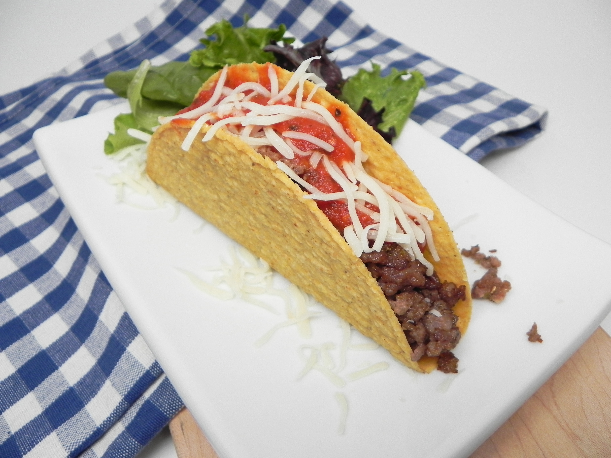

Tacos

I love Tacos so much !
Ingredients:
- ½ pound Italian sausage
- 1 pound ground beef
- 1 (16 ounce) jar tomato pasta sauce
- 1 teaspoon sugar
- 16 taco shells, heated
- 3 cups shredded mozzarella cheese
- 1 tablespoon dried Italian seasoning
Steps:
- Combine the ground beef and Italian sausage in a large heavy skillet. Cook over medium heat until evenly browned. Drain off excess grease, and season meat with Italian seasoning.
- Heat the pasta sauce in a saucepan over medium heat until heated through. When the sauce is warm, stir in the sugar.
- Fill taco shells with the meat mixture, spoon pasta sauce over, and top with mozzarella cheese.